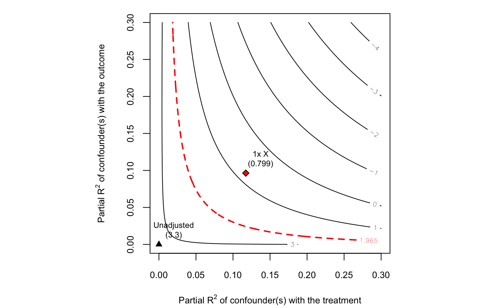

— under construction come back soon! —
To provide a “quick-start” , here we show the basic functionality of the package in a simulated example. This functionality will suffice for most users most of the time. The basic workflow is as follows:
Fit a linear outcome model using lm.out <- lm(). This should have your treatment and (pre-treatment) covariates on the right hand side.
Create a sensemakr object, sense.out <- sensemakr(lm.out), which contains useful sensitivity quantitites.
Explore the results by use of plot(sense.out) and summary(sense.out), or through direct calls to the lower-level functions these methods use.
The first step is running the linear outcome model. Consider the following linear structural model with a treatment variable \(D\), an outcome variable \(Y\) and two “confounders” \(X\) and \(Z\). All disturbance variables \(U\) are mutually independent. Note that, in reality, the treatment \(D\) has no causal effect on the outcome \(Y\).
\[\begin{align} Z &= U_{z}\\ X &= U_{x}\\ D &= X + Z + U_d\\ Y &= X + Z + U_y \end{align}\]
The code below creates a sample of size \(n = 500\) for this data generating process.
set.seed(10)
n <- 500
Z <- rnorm(n)
X <- rnorm(n)
D <- X + Z + rnorm(n, sd = 3)
Y <- X + Z + rnorm(n, sd = 3)Suppose that an investigator is interested in estimating the causal effect of \(D\) on \(Y\), but unfortunately the confounder \(Z\) is not observed. Despite this, the investigator still chooses to proceed with estimation, running a linear regression model adjusting for \(X\) only. This results in the following estimates in Table .
lm.model <- lm(Y ~ D + X)
summary(lm.model)
#>
#> Call:
#> lm(formula = Y ~ D + X)
#>
#> Residuals:
#> Min 1Q Median 3Q Max
#> -10.8400 -1.9654 -0.0487 2.1191 8.7388
#>
#> Coefficients:
#> Estimate Std. Error t value Pr(>|t|)
#> (Intercept) 0.01901 0.14264 0.133 0.894011
#> D 0.13916 0.04177 3.332 0.000927 ***
#> X 0.95933 0.15594 6.152 1.58e-09 ***
#> ---
#> Signif. codes: 0 '***' 0.001 '**' 0.01 '*' 0.05 '.' 0.1 ' ' 1
#>
#> Residual standard error: 3.187 on 497 degrees of freedom
#> Multiple R-squared: 0.1227, Adjusted R-squared: 0.1192
#> F-statistic: 34.76 on 2 and 497 DF, p-value: 7.4e-15The estimated coefficient for \(D\) in the regression model adjusting for \(X\) is statistically signficant and substantively large. The investigator, however, knows that she has not measured all relevant confounders, and that the observed association between \(Y\) and \(D\) could be due to the omission of some variable \(Z\). How strong would \(Z\) need to be to substantially alter the conclusions of the study? Is that strength plausible? Or, more precisely, how strong would \(Z\) need to be relative to the observed covariate \(X\)? The package provides tools to answer these types of questions.
To peform sensitivity analysis, our investigator starts by passing the estimated model to the function sensemakr(), along with the treatment of interest \(D\)
library(sensemakr)
sense.model <- sensemakr(model = lm.model, treatment = "D",
benchmark_covariates = "X", kd = 1)
sense.model
#> Sensitivity Analysis to Unobserved Confounding
#>
#> Model Formula: Y ~ D + X
#>
#> Unadjusted Estimates of ' D ':
#> Coef. estimate: 0.13916
#> Standard Error: 0.04177
#> t-value: 3.3319
#>
#> Sensitivity Statistics:
#> Partial R2 of treatment with outcome: 0.02185
#> Robustness Value, q = 1 : 0.1387
#> Robustness Value, q = 1 alpha = 0.05 : 0.05939
#>
#> For more information, check summary.What do these results mean?
If the investigator know that… she can safely conclude that… on the other hand, if she suspects that… then…
Sometimes, however, it may be hard to make absolute judgments on the strength of the confounder, but the researchar may have grounds to judge the relative strength of confounding. Thus, let us suppose our researcher further knows that the omitted variable \(Z\) could potentially be as strong as the observed covariate \(X\). So she wonders: would a confounder with such strength be enough to be to explain away all the observed association.
